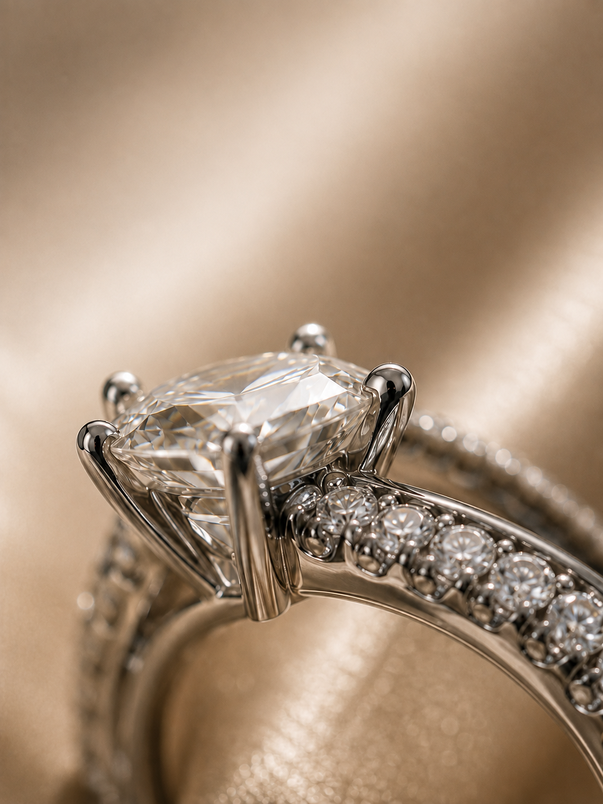

Your idea, developed together
Discuss your design with the atelier and review the proposed details before production. We help you choose the materials, diamond options and fit for your piece.
DISCOVER VICTORIA
Our story brings together heritage, thoughtful design and a love of fine jewellery. Our craftsmanship turns those ideas into a piece made personally for you.

Established in Hong Kong, Victoria Diamonds draws inspiration from the city’s jewellery traditions and its meeting of Eastern and Western influences. Today, we bring that approach to London, combining traditional techniques with contemporary design.
A bespoke piece begins with the person who will wear it: a milestone, an everyday favourite or a design with a story of its own. Our London atelier helps you explore the materials, diamonds and details that give it meaning.
Discuss your design with the atelier and review the proposed details before production. We help you choose the materials, diamond options and fit for your piece.
Our existing craft process brings together goldsmithing, casting and hand-finishing, with attention to the curves, setting and surface of the design.
Materials, settings and finish are reviewed through the making process. Confirm the final specifications and any grading documentation with us before ordering.
Personalised finishing and custom sizing bring the design back to the person it was created for. Talk to us about engraving, fit and the details you would like to include.
Speak with our London atelier about your piece, its paperwork or the best way to care for it.